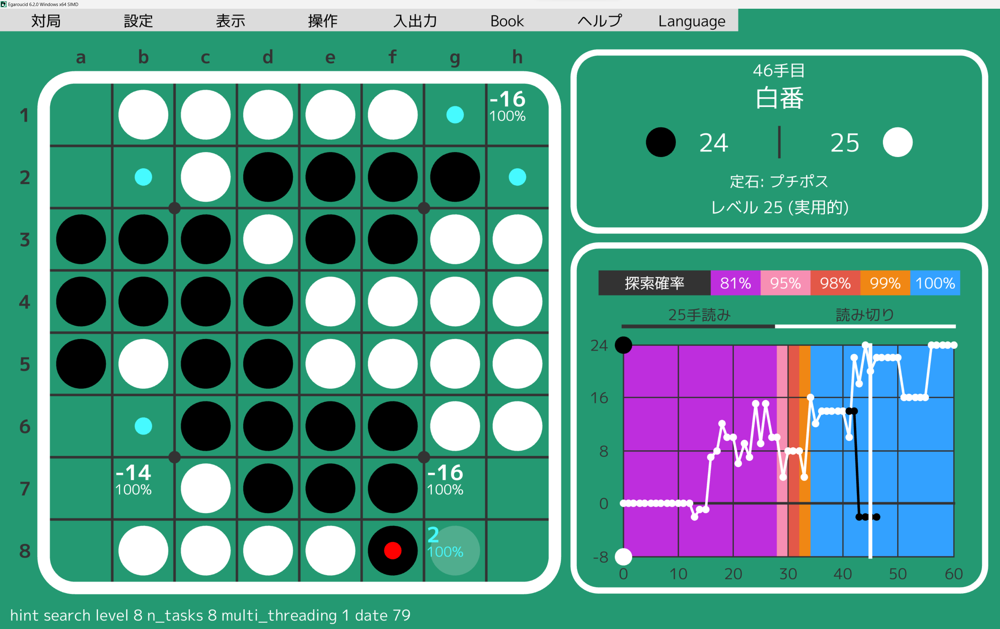
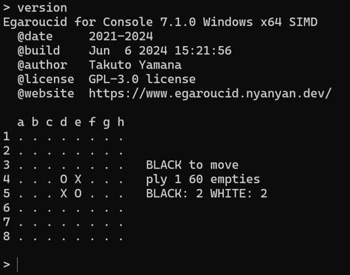
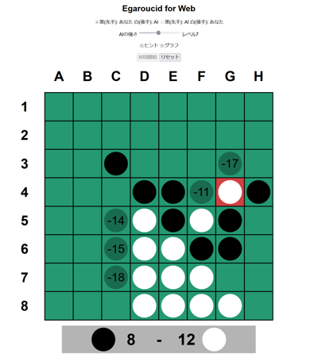

English
オセロAI Egaroucid
世界最強レベルAI搭載 オセロ研究支援アプリ
Egaroucidは世界最強クラスのオセロAIを搭載した無料のオセロ研究・対戦用アプリです。搭載AIの軽量バージョンはCodinGame Othelloで世界1位になったものです(2023年3月現在)
ラインナップ
全てフリーソフトとして公開しています。EgaroucidとEgaroucid for Consoleは同一の強い思考エンジンですが、Egaroucid for Webは簡易的な思考エンジンを搭載しています。
| 名称 | 対応OS | 詳細 |
| Egaroucid | Windows | ダウンロード |
| Egaroucid for Console | Windows/Linux | ダウンロード |
| Egaroucid for Web | 任意のWebブラウザ | 今すぐ遊ぶ |
  
特徴
- 正確で高速な独自の評価関数
- 高速な探索
- AIとの対局
- 独自GUIでの対局
- Go Text Protocol (GTP)対応GUIを用いた対局(Egaroucid for Console)
- 対局解析
- 評価値・うみがめ数の表示
- 各種入出力
- bookを自動/手動で作成/修正
- Egaroucid/Edax形式bookの追加・統合
- 定石名の表示
導入する
Egaroucid
ダウンロードページより自分の環境に合ったものをダウンロードし、インストーラを実行してください。
Egaroucid for Console
コンソール版導入ページの解説に従ってダウンロードまたはビルドをしてください。
Egaroucid for Web
ダウンロードやインストールの必要はありません。
Web版ページで今すぐ遊べます。
バグ報告・新機能の提案などを募集しています
こちらのGoogleフォームより意見を受け付けています。
- 不具合を発見した
- Egaroucidの翻訳をしたい
- こんな機能が欲しい
- こうしたらもっと良くなりそう
- ユーザテストに参加したい
など、様々な意見をお待ちしております。
技術解説
技術解説ページ(日本語のみ)を作りました。のんびりと追記していきます。
OSSへの貢献を歓迎します
EgaroucidはGPL-3.0ライセンスの下で作られたオープンソースソフトウェアです。
GitHubにて全てのコードを公開しています。プルリクエストなどによる貢献を歓迎しています。
Egaroucidを使用したアプリを作る場合
GPL-3.0ライセンスの下で自由に使っていただいて構いません。GPLの感染が気になる場合にはご相談ください。利用した場合には(義務ではありませんが)利用報告をいただけると喜びます。
謝辞
開発に多大なる貢献をしていただいた方々に感謝します(順不同、敬称略)。
- UIデザイン
- 技術提供
- 技術的アドバイス
- 定石名提供
- Book提供
- ユーザテスト
- 出本大起
- まてぃか
- Nettle蕁麻
- okojoMK
- 高田征吾
- まだらぬこ
- 長野泰志
- trineutron
- クルトン
関連リンク
作者
山名琢翔